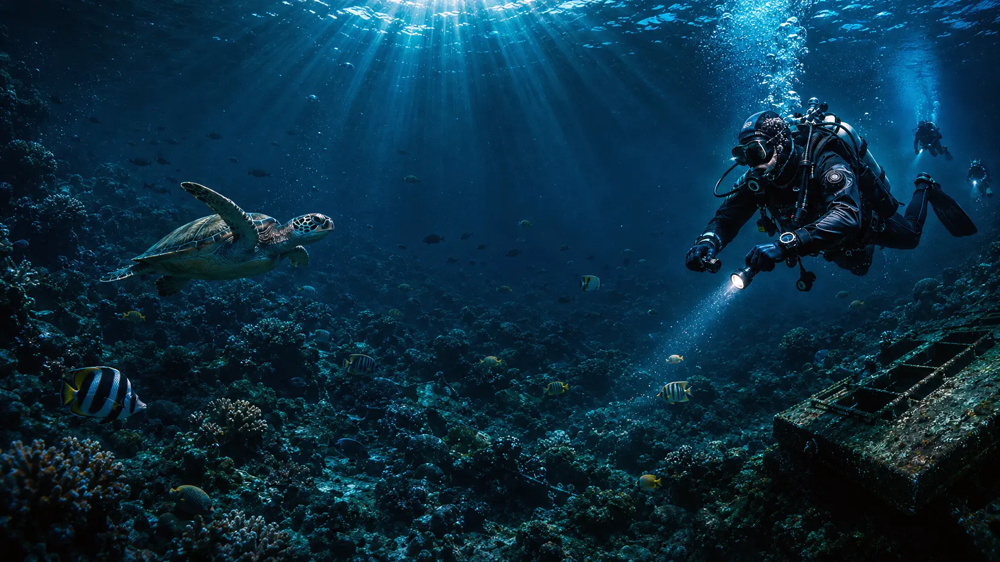
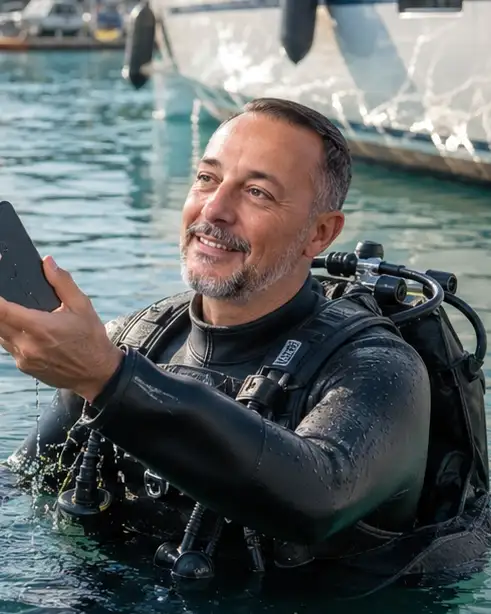

Chris Conen PADI búvároktató — 2010 óta, több mint 16 év nemzetközi tapasztalat Mallorcától a Fülöp-szigetekig. Búvártanfolyamok, keresés & mentés, és specialty merülések Magyarországon és a világ bármely pontján.
Teljes körű búvároktatás és professzionális keresés & mentés szolgáltatás
PADI Open Water-tól Rescue Diver-ig – nemzetközi minősítés, magyar oktatási nyelvvel.
RészletekBalaton, Mallorca, Kanári-szigetek, Fülöp-szigetek – szervezett utak, csoportos merülések itthon és a világban.
RészletekNitrox, vízalatti navigáció, drift diving, cápás merülés és egyéb specialtyk.
RészletekBalaton, Velencei-tó, Tisza-tó – hivatalos keresőbúvár szolgáltatás Magyarország vizein.
RészletekAmit különleges tudásként kínálok
Nemzetközi úti célok, egységes PADI minőség
Chris Conen vagyok, PADI OWSI (Open Water Scuba Instructor) 2010 óta. A búvároktatás nem csak munkám, ez a szenvedélyem. Az elmúlt évek során három kontinens több országában tanítottam és képeztem búvárokat.
Mallorcán töltöttem 6 évet, ahol a Földközi-tenger kristálytiszta vizében oktattam. Ezt követte 1 év a Kanári-szigeteken (Fuerteventura & Gran Canaria), majd 1 év a Fülöp-szigeteken, ahol a Sipaway Divers búvárbázis menedzsere voltam.
Ma már Magyarországon folytatom a munkát, hogy itthoni vizeink szépségét is megismertessem a búvárokkal.
Teljes történetemPADI OWSI
Chris Conen
Az első merülés élménye egy életre szól. Vedd fel velem a kapcsolatot, és megbeszéljük a lehetőségeket.
Vedd fel velem a kapcsolatot emailben vagy telefonon, és megbeszéljük a tanfolyamokat, árakat és időpontokat.